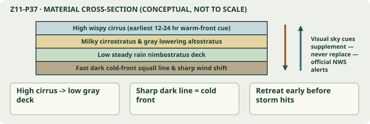

Z11-P37 · Navigation, weather and rescue · New manuscript
Read cloud sequences signaling an approaching warm or cold front
Spot progressive sky changes hours before rain, wind shifts or temperature drops reach an exposed route.
When it applies · Day and multi-day outdoor travel where official forecasts should be cross-checked against live sky trends.
Equipment · Pre-trip NWS forecast, NOAA Weather Radio if available and periodic sky/wind checks.

Actions
- Watch for the classic warm-front cloud progression: high wispy cirrus thickening and lowering steadily into milky cirrostratus (often ringing sun/moon), then gray altostratus and finally low rain-bearing nimbostratus over 12–24 hours.[N06]
- Watch for fast-moving cold-front cues: rapidly darkening western/northwestern cloud lines, sharp wind shifts, gusty outflow air and sudden steep temperature drops with brief heavy squalls or snow showers.[N06, E18]
- Treat visual sky reading strictly as an early-warning supplement to official NWS forecasts and NOAA Weather Radio—not a replacement for official watches and warnings.[N06, T14, T15]
Failure recognition · Ignoring a thickening lowering gray deck and shifting wind on a high exposed route because the morning started sunny.[N06, E18]
Verify · Note cloud height trend (lowering vs clearing) and wind direction shift every hour on exposed routes, comparing with the official forecast.[N06, ED]
Stop or change course · Rapidly lowering dark cloud decks paired with rising gusts or cooling air trigger early retreat off ridges, lakes and open water before precipitation arrives.[N06, E18, E16]
Evidence and editorial notes
- E16 · NWS · Wind Safety (current web edition)
- Section: Wind Safety > High Wind Hazards · Conditions: Forecast or developing high winds, squalls, or straight-line winds
Support: High winds topple trees, loft debris, and stress lightweight shelters beyond fabric and anchor limits; relocate out of timbered fall zones and into substantial shelter before gusts peak.
Limitations: Tents and tarps lack standardized wind-speed survival guarantees across soil types and pitch angles. · Conflicting evidence: None; avoids unvalidated mph ratings for improvised pitches.
Editorial note: Drives high-wind shelter inspection, guying limits, and abandonment thresholds. · Specialist reviewer: Weather safety and shelter equipment
Primary source · checked 2026-11-24 - E18 · NWS · Thunderstorm Safety (current web edition)
- Section: Thunderstorm Safety > Hail, Downbursts, and Flooding · Conditions: Approaching severe thunderstorm with hail, outflow gusts, or heavy rain
Support: Outflow gusts, hail, lightning, and flash runoff can strike before rain arrives at camp; break exposed ridge travel early and secure or vacate lightweight shelters.
Limitations: Storm cells can intensify faster than backcountry foot travel can clear exposed terrain. · Conflicting evidence: None; integrates with E04 and E07.
Editorial note: Connects storm-structure warning cues to early shelter selection. · Specialist reviewer: Weather safety and emergency management
Primary source · checked 2026-11-24 - N06 · NOAA NWS · JetStream Online School for Weather (current web edition)
- Section: JetStream > Clouds, Fronts and Atmospheric Pressure · Conditions: Field weather observation and short-term storm anticipation
Support: Thickening high-to-low cloud decks, rapid barometric drops, towering cumulus building into anvils and backing/shifting winds often signal approaching frontal systems or convective storms.
Limitations: Local visual weather signs supplement—and never replace—official NWS forecasts and active warnings. · Conflicting evidence: None; separates physical weather cues from folklore sayings.
Editorial note: Grounds cloud, front, wind-shift and microclimate weather cards in Z11. · Specialist reviewer: Meteorology and outdoor leadership
Primary source · checked 2026-11-24 - T14 · FEMA / Ready.gov · Emergency Alerts (current web edition)
- Section: Emergency Alerts > WEA, EAS, and NOAA Weather Radio · Conditions: Receiving time-critical hazard warnings at home or outdoors
Support: Use multiple redundant alert channels—Wireless Emergency Alerts, local opt-in alerts, and battery/crank NOAA Weather Radio—so a single dead phone or tower outage does not eliminate warning reception.
Limitations: Backcountry terrain can block both cellular and VHF weather radio reception. · Conflicting evidence: None; aligns with NOAA-NWR.
Editorial note: Grounds emergency warning redundancy in Z01 communication cards. · Specialist reviewer: Emergency management and communications
Primary source · checked 2026-11-24 - T15 · NOAA NWS · NOAA Weather Radio All Hazards (current web edition)
- Section: NOAA Weather Radio All Hazards > Coverage and Receivers · Conditions: Weather and civil-hazard monitoring across the United States
Support: NOAA Weather Radio broadcasts continuous official warnings directly from NWS offices on VHF frequencies; battery or hand-crank receivers with SAME alerting operate independently of cellular networks.
Limitations: VHF line-of-sight range can be attenuated in deep valleys or dense metal structures; verify local transmitter reception before relying on it. · Conflicting evidence: None; aligns with READY-ALERTS.
Editorial note: Documents offline weather-alert radio capabilities and reception limits. · Specialist reviewer: Meteorology and emergency communications
Primary source · checked 2026-11-24
Source lineage · NOAA JetStream weather school; new manuscript · Classification · New manuscript.